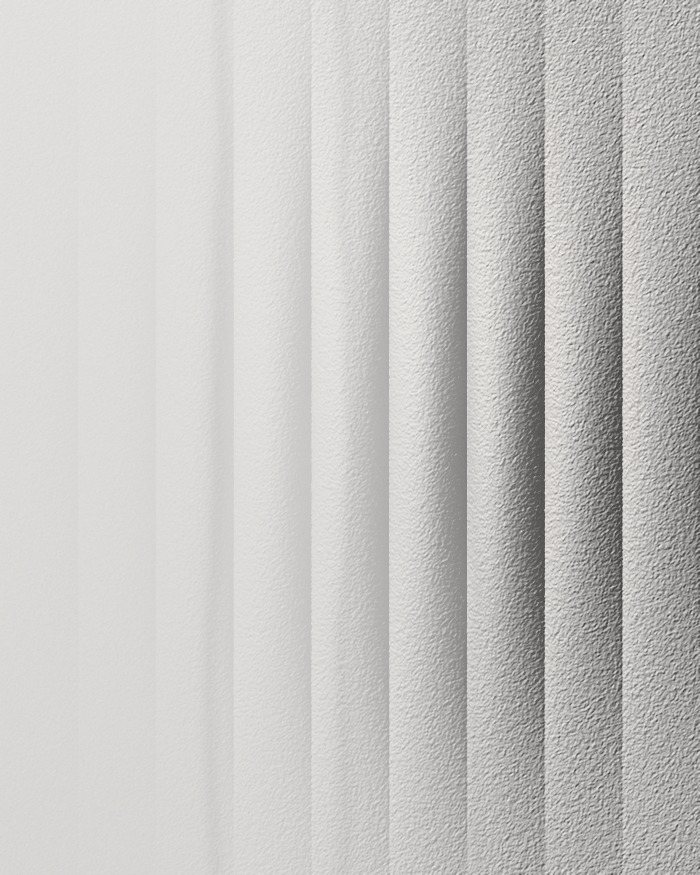
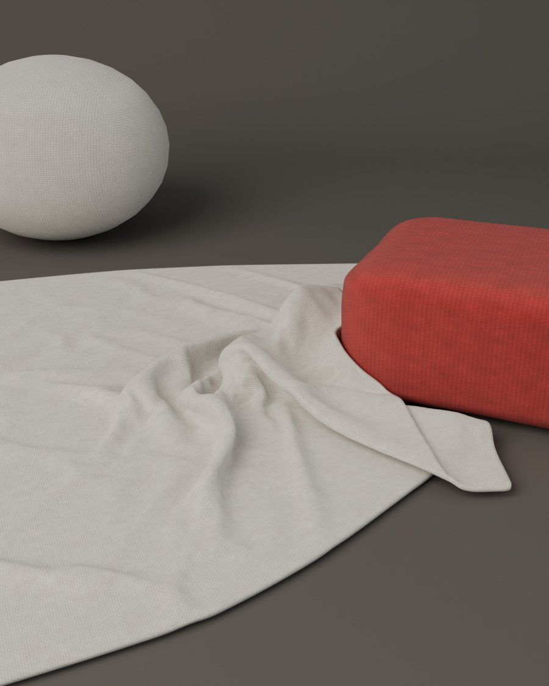

Who owns it
Not who made it, who owns it.



Overall mood
The machinery behind the cloth. A chain of punched cards that holds a pattern, looms in rows under a factory roof, a weaving shed where makers work beside their frames, a gallery that shows only the finished object. The pictures look at how cloth gets made and shown, and ask who owns the means. Light is even and documentary; color stays near black, gray and loom-wood brown, with one pink cloth as the single bright note.

Definition and test
Test. Who owns the means that produced it, and does the work change that?
It can show the apparatus (what makes the cloth), the scale and setting it sits in, who stands at it, and the frame the finished object is shown in.
Motifs
Each motif is taken from a sentence in the sources above.
| # | Motif | Theory sentence it comes from | Images |
|---|---|---|---|
| 01 | The program in the machine: punched cards, lifting cords | "the means of producing culture" / apparatus of production | (01), (02) |
| 02 | The machine as property: looms in rows on one floor | "Who owns the means that produced it" | (03), (04) |
| 03 | The maker at the frame: workers beside their looms | "does the work change that?"; the research: a worker can grow more productive while becoming less powerful | (05) |
| 04 | The institution frame: white walls, finished objects, a mill kept as a museum | institutional critique in the theme title; Benjamin, "not only its message" | (06), (07) |
Weak motifs. 03 is weak: one photo (05) of a shed where makers work, with tiny figures; it shows people at the apparatus, not that they own it.
Against (what T4 opposes)
Benjamin's framing the AI question is less about authenticity than about who owns the apparatus.
Counter-case
None on the board. A counter-case here would be a work that carries a critical message on an unchanged apparatus (for example a slogan on a mass-produced shirt). Searches on Wikimedia Commons for such an image returned nothing clearly licensed and legible, and a photograph of a shirt cannot show that its apparatus is unchanged. Image (03) is not a counter-case: it shows a machine, and no one's claim about it. Open item.
Color direction
No. The palette below is measured from the seven images and describes this board only; it is not a proposal for the color library.